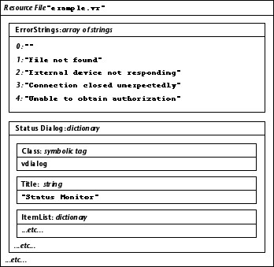

Resource
The Resource class provides a way for applications to efficiently store and retrieve structured data, either in disk files or in memory. Many Galaxy classes use the Resource class to store and retrieve such information as parts of the user interface, strings, graphics, and so on. Applications can likewise use the Resource class to store and retrieve their own data.
Resource files can be created by application programs or by the Visual Resource Builder. (Refer to the Visual Resource Builder User's Guide for more information.) Typically, an application will store its entire user interface (dialogs, associated controls, strings, and error messages) in one or more resource files. Keeping the user interface separate from the program makes it straightforward to translate the application into another language. Burying strings and error messages haphazardly through the code will make your application error prone and very difficult to translate.
The Application class searches for an application-specific resource file in a series of standard locations. This file is opened read-only if it is found; the application can access it using the vapplicationGetResources function. (Refer to the Application class for details.)
The Resource class can also embed read-only resource files within an executable file. Embedded resource files allow applications to be delivered as a single executable file that contains the application's code and its resource files.
The basic unit of storage provided by the Resource class is the resource. Table 35 lists the fundamental types of resources with corresponding standard C or Galaxy data types.
| Resource Type | Corresponding C or Galaxy Data Type |
|---|---|
| Array | [] (one-dimensional array of one of the types listed below ) |
| Boolean | vbool (TRUE or FALSE) |
| Character | vchar |
| Character String | vchar [] (sequence of vchar) |
| Dictionary | vdict or C struct |
| Fixed point | vfixed |
| Floating point | float |
| Integer | int |
| Opaque | vbyte [] (arbitrary sequence of bytes) |
| Symbolic Tag | const vname * (global name¯refer to the Name class) |
| Untyped | none (placeholder value) |
The elements of an array or the components of a dictionary can in turn be arrays or dictionaries. This allows for arbitrarily nested data structures, in a form identical to the directory tree of a hierarchical file system. A resource file is simply a dictionary resource, which is stored in a file along with all of its components.
Opening or creating a resource file returns an identifier for the root dictionary of the resource file. Starting from this base identifier, it is possible to locate all of the resources in the resource file. An empty resource file consists of a single empty dictionary.
Arrays and dictionaries are the basic means for forming composite resources out of simpler components. An array resource allows its components to be retrieved via a numerical index, ranging from 0 to one less than the total size of the array. A dictionary is a set of tag/value pairs, where the tag is a name from the global name table and the value is another resource. (Refer to the Name class for more information about global names.) Figure 69 is an example dictionary resource and its components.
Figure 69. Example resource file organization

There are three ways to specify a particular resource within a resource file:
Disk-based resource files are portable across machine architectures. All multi-byte values are stored in big-endian form and translated as needed for little-endian systems. The application must explicitly store opaque resources in a portable fashion, because the Resource class treats opaque resources as an arbitrary sequence of bytes.
Many Resource class calls allow you to denote a resource using either method (1) or method (2). In situations where the vresource is already known, you simply pass a tag value of vresourceTAG_NULL.
Key Functionality
This section contains sample code to help you get started using the Resource class. The code fragments in the examples that follow are intended to be executed in order. Each fragment depends on values established in the preceding examples. Creating a Memory Resource File
All resource manipulation takes place within the context of a resource file. The Resource class allows you to create new files or to open existing ones. The function CreateMem is used to create a new, memory-based resource file: vresource memRes;
memRes = vresourceCreateMem();
memRes identifies the root of the resource file. Since it was just created, it is empty. Items can be added to the resource file using various forms of Set. Creating a Dictionary
Within the memory resource file we can now create a dictionary resource named "User" as a container: vresource dictRes;
dictRes = vresourceCreate(memRes, vnameInternGlobalLiteral("User"),
vresourceDICT);
Create creates the dictionary resource using the supplied tag ("User") within the root dictionary of the memory resource file (memRes). Note that Create returns a unique identifier for the dictionary, and that the identifier is stored in dictRes for later use. Creating Resource Tags
The vnameInternGlobalLiteral function is used to create a tag which identifies each component of a dictionary. If a set of tags will be used frequently, the string literals can be interned once and then reused. This is more efficient and safer because the tag name is only represented once in the source code. const vname *HeightTag, *WeightTag, *NameTag;
HeightTag = vnameInternGlobalLiteral("Height");
WeightTag = vnameInternGlobalLiteral("Weight");
NameTag = vnameInternGlobalLiteral("Name");
Creating Integer Resources
Within the "User" dictionary, we can then create two integer resources named "Height" and "Weight" using the vname pointers generated in the preceding example:
- vresourceSetInteger(dictRes, HeightTag, 72);
vresourceSetInteger(dictRes, WeightTag, 210);
Creating a String Resource
We can also create a string resource in the "User" dictionary using the vname pointer generated for "Name":
- vresourceSetStringScribed(dictRes, NameTag,
vcharScribeLiteral("John Doe"));
Getting Information about Resources
Resource class functions can be used to get information about items within the resource file:
- size_t numRootEntries, numUserEntries;
numRootEntries = vresourceCountComponents(memRes);
numUserEntries = vresourceCountComponents(dictRes);
Processing Dictionary Components
You can use Resource class functions to iterate over the components in a dictionary in order to process them one at a time. This is especially useful for functions that can receive an arbitrary dictionary resource and then take action based on the items in the dictionary. This example retrieves each component of the "User" dictionary and performs special processing for integer resources:
- size_t i;
int intVal;
vresource tmpRes;
const vname *tmpTag;
for (i = 0; i < numUserEntries; i++) {
tmpRes = vresourceGetNthComponent(dictRes, i, &tmpTag);
if (vresourceType (tmpRes) == vresourceINTEGER) {
intVal = vresourceGetInteger(tmpRes,
vresourceTAG_NULL);
/* Process intVal here. tmpTag is its name */
}
}
- intVal = vresourceGetInteger(tmpRes, vresourceTAG_NULL);
intVal = vresourceGetInteger(dictRes, tmpTag);
It is also possible to create arrays of items using the Resource class. Each array is of a particular type, and the type is specified when the array is created:
Example 123. Creating an array resource
vresource arrayRes;
const vname *ArrayTag;
ArrayTag = vnameInternGlobalLiteral("Salary");
arrayRes = vresourceCreateArray(dictRes, ArrayTag, vresourceFLOAT, 4);
This code creates an array of four floating-point values within the "User" dictionary. The unique resource identifier returned by CreateArray is stored in arrayRes for future reference. Setting Array Items
After the array has been created, individual items can be set: vresourceSetFloatAt(arrayRes, 0, 35000.);
vresourceSetFloatAt(arrayRes, 1, 42000.);
vresourceSetFloatAt(arrayRes, 2, 50000.);
vresourceSetFloatAt(arrayRes, 3, 75000.);
Processing Array Items
Array items can be easily retrieved. The following loop computes a person's average salary. Note that it will work for any floating point arrays, because CountComponents is used to see how many items are in the array:
- size_t i, numArrayEntries;
double total, average;
total = 0.0;
numArrayEntries = vresourceCountComponents(arrayRes);
for (i = 0; i < numArrayEntries; i++) {
total += vresourceGetFloatAt(arrayRes, i);
}
if (itemCount == 0)
average = 0.0;
else
average = total / numArrayEntries;
Creating a Disk-based Resource File
The memory resource file can be written to a permanent (disk-based) resource file ("acme.vr" in this example) for safekeeping:
- vresource diskRes;
vfsPath *pathName;
pathName = vfsCloneHomeDirPath();
vfsAppendPathScribed(pathName, vcharScribeLiteral ("acme.vr"), NULL);
diskRes = vresourceCreateFileFromMem(memRes, pathName,
vfsOWNER_READ | vfsOWNER_WRITE);
Cleaning Up
Finally, the disk resource file is closed, the memory resource file is destroyed, and temporary data is cleaned up:
- vresourceCloseFile(diskRes);
vresourceDestroyMem(memRes);
vfsDestroyPath(pathName);
Additional Functionality
Using Embedded Resource Files
With Galaxy, you can embed read-only resource files in executables so that auxiliary files are not needed to make the application work. A utility program (vrescopy) is used to turn a resource file into a C source file that defines the contents of the resource file. The C source will end up in the text segment of your program, because it is read-only and can be shared. The resource file is always stored in compact form by the vrescopy program.To embed resource files:
- Create your resource file using the Visual Resource Builder ("app.vr").
- Run the program vrescopy to generate a C source file from your resource file. Here is how to run vrescopy:
- vrescopy res_file c_file -c data_name
- For "app.vr", the command line to generate appres.c with the resource data named "MyRes" is:
- vrescopy app.vr appres.c -c MyRes
- Normally you will set up your makefile to do this automatically as part of a build. If you do not specify a structure name, the default name "foo" will be used.
Alter your makefile to compile appres.c and include the object file in the list of files that comprise the application.
Write your application ("app.c"). Instead of calling OpenFile to access an external resource file, call OpenInternal to open the compiled version:
- vresource vresourceOpenInternal (const void *data);
- Pass the address of the generated data to OpenInternal:
- extern MyRes;
vresource ResRoot;
ResRoot = vresourceOpenInternal (&MyRes);
- Note that it is perfectly legal to pass the address of something whose type you do not know, which is what happens here.
- Within your application, use ResRoot as you would the root of a resource file
opened with OpenFile. Do not try to write to it (it is constant data), and be sure to
close it when you are through. Note that you can have several resource files
embedded in your application.
- For more information on the vrescopy utility, refer to Tools.
Table of Contents
Help Map
Need help? Contact Visix.